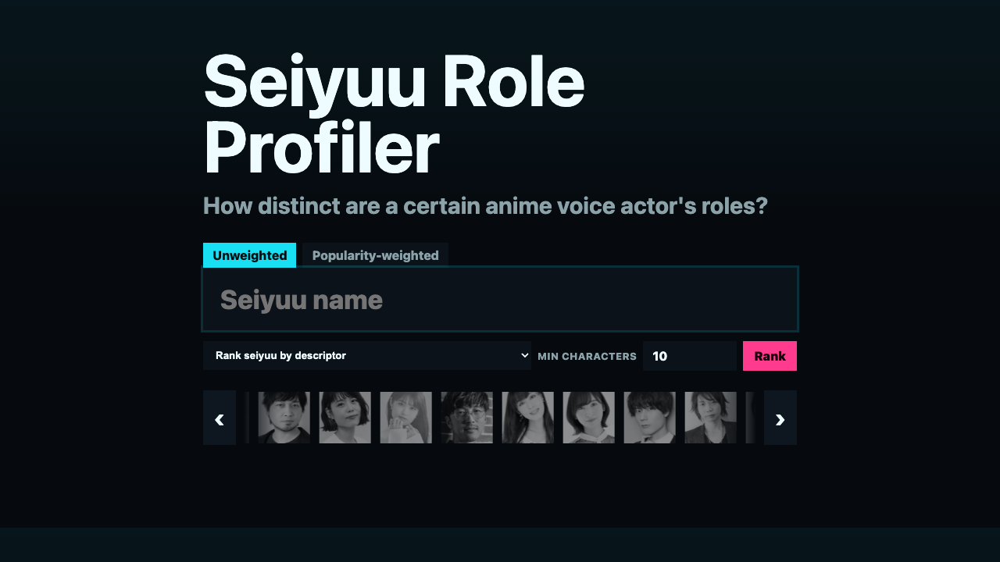
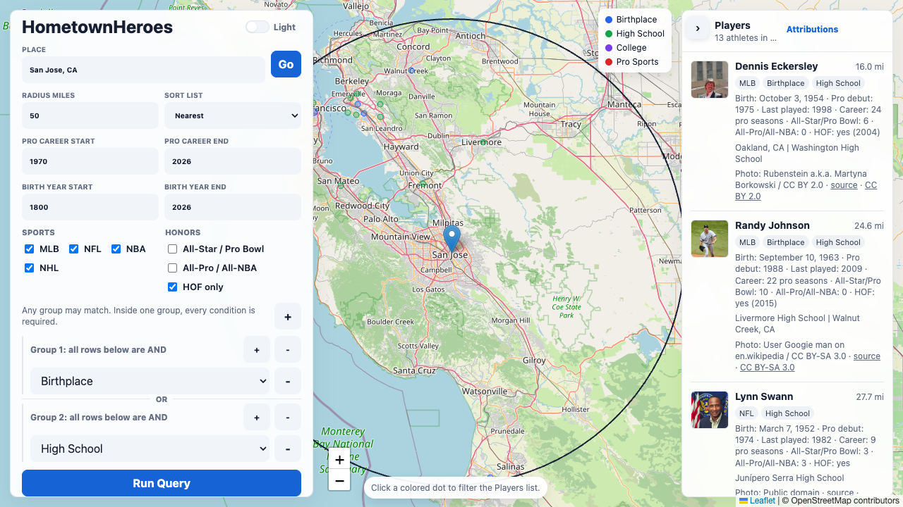
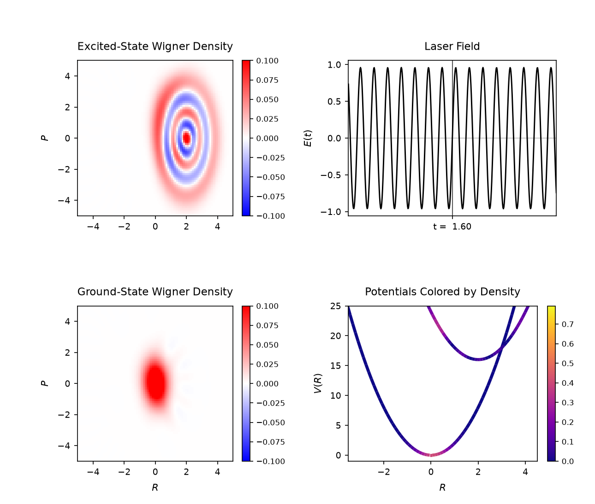

Visualization and Data Analysis
Seiyuu Role Profiler **
Ever wondered if you can quantify what anime voice actors specialize in what roles?

Ever wondered if you can quantify what anime voice actors specialize in what roles?

Ever wondered what famous professional athletes grew up near your home town?

Ever wondered how nuclear wavepackets respond to electronic excitations?